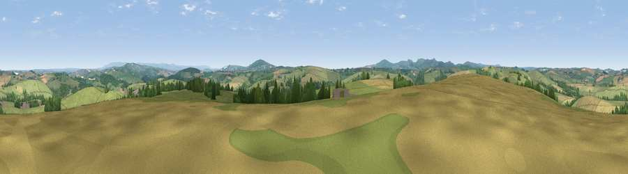

Viewpoint near Trebullett
#15015 in England · top 25% of its area beats it · near TrebullettWhere it is
The exact computed spot (SX 33525 78075). Click the marker for map links.
The view, rendered

A 360° render of this exact spot computed from the terrain model, tree cover and land cover — summer colours, afternoon light, calibrated against photographs of famous viewpoints. Real trees, hedges and buildings will differ in detail.
The panorama
Grey silhouette: terrain skyline in each direction (720 bearings, Earth curvature and refraction included). Dashed green: skyline with trees (+15 m) and buildings (+8 m) as obstacles. Blue strip: how far the ground is visible on each bearing.
Where the view opens
Wedge length = distance to the farthest visible ground on that bearing (vegetation-aware). Rings at 10, 25 and 50 km.
What fills the view
68% grassland · 18% cropland · 13% woodland ·
Angular shares of the visible panorama (visual magnitude), not map area. Landscape diversity 0.38 (0–1 Shannon).
Key numbers
More beautiful places nearby
The staircase of upgrades: each row has a higher view potential than everything closer. Driving times are estimates from straight-line distance, calibrated against real road routing — check an actual route before setting out.
| Place | Direction | Drive | Score |
|---|---|---|---|
| Larrick Hill | W · 2 km | ~6 min | 60.1 |
| Viewpoint near Downgate | SSE · 5 km | ~11 min | 61.9 |
| Viewpoint near Bradstone | ENE · 6 km | ~12 min | 64.1 |
| Viewpoint near North Hill | WSW · 7 km | ~15 min | 64.7 |
| Viewpoint near Kelly Bray | SSE · 7 km | ~15 min | 73.8 |
| Kit Hill | SSE · 8 km | ~16 min | 80.3 |
| Viewpoint near Dousland | ESE · 23 km | ~39 min | 81.0 |
| Viewpoint near Downderry | S · 24 km | ~39 min | 81.5 |
50.57863, -4.35265 · source: screening · position refined by local search. Computed location — check access rights before visiting.